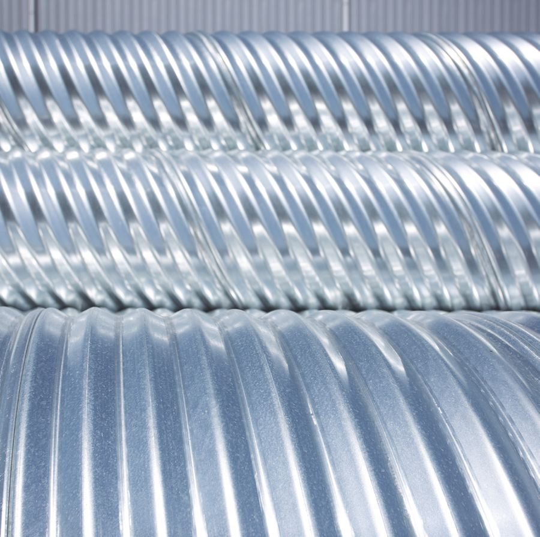

關於我們About us회사소개
守護環境、貢獻社會，並創造價值的企業。A company that protects the environment, contributes to society and creates value.환경을 지키고 사회에 기여하며 가치를 만드는 기업.
浚利鋼鐵 × REXSTEELJiun-Li Steel × REXSTEEL준리강철 × REXSTEEL
雷克斯波形鋼鐵股份有限公司係由台灣浚利鋼鐵材料股份有限公司與韓國 REXSTEEL（大韓鋼管集團）各出資 50% 合資成立之波形鋼管專業製造公司，生產基地位於雲林縣斗南鎮。RexSteel Co., Ltd. is a corrugated steel pipe manufacturer founded as a 50:50 joint venture between Jiun-Li Steel Material Co., Ltd. of Taiwan and REXSTEEL of Korea (Daehan Steel Pipe Group). Production is based in Dounan Township, Yunlin County.雷克斯波形鋼鐵(레이커쓰 파형강철) 주식회사은 대만 浚利鋼鐵(준리강철)와 한국 REXSTEEL(대한강관그룹)이 50%씩 출자해 세운 파형강관 전문 제조회사이며, 생산기지는 운림현 斗南(더우난)에 있습니다.
浚利鋼鐵自 1988 年於雲林創立以來，深耕鋼材供應、裁切、焊接及精密加工領域，持續投資先進設備並累積豐富的製造經驗；REXSTEEL 所屬大韓鋼管集團自 1999 年起專業生產波形鋼管，取得韓國國家標準 KS D 3590 認證，具備完整的產品技術與工程實績。Since its founding in Yunlin in 1988, Jiun-Li Steel has built deep experience in steel supply, cutting, welding and precision fabrication, investing steadily in advanced equipment. The Daehan Steel Pipe Group, to which REXSTEEL belongs, has produced corrugated steel pipe since 1999 and holds KS D 3590 certification, with a full product range and project record.준리강철은 1988년 운림에서 창업한 이래 강재 공급·절단·용접·정밀가공 분야에서 꾸준히 설비에 투자하며 제조 경험을 쌓아 왔고, REXSTEEL이 속한 대한강관그룹은 1999년부터 파형강관을 전문 생산하며 한국 국가표준 KS D 3590 인증과 완비된 제품 기술·시공 실적을 갖추고 있습니다.
本公司結合雙方在材料加工與波形鋼管製造技術上的優勢，引進 0RS 螺旋波形鋼管生產設備，為台灣公共工程、住宅及土地開發等領域，提供品質穩定、交期可靠的排水管材與技術服務。Combining both partners' strengths, the company has installed a 0RS helical corrugated pipe line to supply Taiwan's public works, housing and land development with drainage pipe of stable quality, reliable delivery and engineering support.당사는 양사의 소재 가공과 파형강관 제조 기술을 결합해 0RS 나선형 파형강관 생산설비를 들이고, 대만 공공공사·주택·토지개발 분야에 품질이 안정적이고 납기가 확실한 배수관과 기술 서비스를 공급합니다.

浚利鋼鐵材料股份有限公司Jiun-Li Steel Material Co., Ltd.浚利鋼鐵(준리강철)
1988 年於雲林斗南創立，以鋼板、型鋼之裁剪買賣起步，三十餘年持續投資加工設備。合資公司的土地、廠房、既有設備與在地網絡由浚利提供，0RS 產線設於浚利廠區內。Founded in Dounan, Yunlin in 1988 as a steel plate and section trader and cutter, Jiun-Li has invested in processing equipment for over three decades. It provides the JV's land, plant, existing equipment and local network; the 0RS line sits inside its premises.1988년 운림 斗南(더우난)에서 강판·형강 절단·판매로 시작해 30여 년간 가공설비에 투자해 왔습니다. 합작법인의 토지·공장·기존 설비·현지 네트워크를 준리가 제공하며, 0RS 생산라인은 준리 공장 안에 있습니다.
斗南 · 斗六兩廠Dounan and Douliu斗南(더우난)·斗六(더우류) 두 공장
雲林縣兩座工廠，合計約 10,000 坪。Two plants in Yunlin, about 10,000 ping (33,000 m²) in total.운림현 두 공장, 합계 약 10,000평(坪).
鋼材供應與裁剪Steel supply and cutting강재 공급·절단
鋼板、型鋼之買賣與裁剪，深耕在地供應鏈。Trading and cutting of steel plate and sections, rooted in the local supply chain.강판·형강 판매와 절단, 현지 공급망 기반.
精密加工Precision fabrication정밀 가공
CNC 雷射切割機、電腦折床及沖孔機（2010 年導入）。CNC laser cutting, press brakes and punching (since 2010).CNC 레이저 절단기, CNC 절곡기, 펀칭기 (2010년 도입).
重型鋼構加工Heavy steel processing중량 철골 가공
斗六科加二廠大型 H 型鋼複合加工機（2021 年擴建）。Large H-beam processing line at Douliu Kejia Plant 2 (expanded 2021).斗六(더우류) 2공장 대형 H형강 복합가공기 (2021년 증설).
大幅面雷射Large-format laser대형 레이저
30kW 大幅面坡口雷射切割機（2026 年導入）。30 kW large-format bevel laser cutter (2026).30kW 대형 개선(開先) 레이저 절단기 (2026년 도입).
品質、交期、技術服務Quality, delivery, engineering support품질, 납기, 기술 서비스
台灣在地生產，結合韓國製造標準與結構計算能力。Local production in Taiwan, backed by Korean manufacturing standards and structural engineering.대만 현지 생산에 한국의 제조 기준과 구조계산 역량을 더했습니다.
穩定品質Stable quality안정된 품질
依 CNS 6920 斷面規格生產，原物料採 CNS 1244 熱浸鍍鋅及 CNS 16166 鋅鋁鎂鋼捲。Produced to CNS 6920 profile dimensions from CNS 1244 galvanized and CNS 16166 Zn-Al-Mg coil.CNS 6920 단면 규격으로 생산하며, 원자재는 CNS 1244 용융아연도금 및 CNS 16166 아연·알루미늄·마그네슘 코일을 사용합니다.
可靠交期Reliable delivery확실한 납기
雲林在地生產，縮短運輸距離，配合工程進度供貨。Made in Yunlin, close to Taiwan's job sites, supplied to match construction schedules.운림 현지 생산으로 운송거리를 줄이고 공정에 맞춰 공급합니다.
技術服務Engineering support기술 서비스
提供管徑別適用範圍、專案結構計算書及施工技術諮詢。Cover tables, project structural calculation reports and installation advice.관경별 적용범위, 프로젝트 구조계산서, 시공 기술 상담을 제공합니다.
兩家公司，一條產線Two companies, one production line두 회사, 하나의 생산라인
浚利鋼鐵材料股份有限公司Jiun-Li Steel浚利鋼鐵(준리강철)
- 1988於雲林斗南創立，以鋼板、型鋼之裁剪買賣起步Founded in Dounan, Yunlin, trading and cutting steel plate and sections운림 斗南(더우난)에서 창업, 강판·형강 절단·판매로 시작
- 2010引進 CNC 雷射切割機、電腦折床及沖孔機，跨足精密加工Added CNC laser cutting, press brakes and punching for precision fabricationCNC 레이저 절단기·CNC 절곡기·펀칭기 도입, 정밀가공 진출
- 2021斗六科加二廠擴建，引進大型 H 型鋼複合加工機Expanded Douliu Kejia Plant 2 with a large H-beam processing line斗六(더우류) 커자 2공장 증설, 대형 H형강 복합가공기 도입
- 2026導入 30kW 大幅面坡口雷射切割機Installed a 30 kW large-format bevel laser cutter30kW 대형 개선 레이저 절단기 도입
- 2026.11雙方合資成立雷克斯波形鋼鐵股份有限公司Joint venture RexSteel Co., Ltd. established양사 합작으로 雷克斯波形鋼鐵(레이커쓰 파형강철) 설립
REXSTEEL｜大韓鋼管集團（韓國）REXSTEEL · Daehan Steel Pipe GroupREXSTEEL｜대한강관그룹(한국)
- 1999.06大韓鋼管公司設立（慶南咸安）Daehan Steel Pipe founded (Haman, Gyeongnam)대한강관 설립 (경남 함안)
- 1999.12開始生產波形鋼管Started corrugated steel pipe production파형강관 생산 시작
- 2000.03榮獲韓國國家標準 KS D 3590 認證Certified to Korean standard KS D 3590한국 국가표준 KS D 3590 인증
- 2007.12設立新韓鋼管(株)（慶北星州）Shinhan Steel Pipe founded (Seongju, Gyeongbuk)신한스틸파이프 설립 (경북 성주)
- 2019.07開始生產內部平滑管Started inner-smooth pipe production내부평활관 생산 시작
- 2020.09設立 REXSTEEL Inc.（慶南咸安）REXSTEEL founded (Haman, Gyeongnam)REXSTEEL Inc. 설립 (경남 함안)
- 2021.07榮獲 ISO 9001:2015 品質認證ISO 9001:2015 certifiedISO 9001:2015 품질 인증
- 2021.12新產品 (NEP) 認證（高附著力包覆波形鋼管）New Excellent Product (NEP) certification, high-adhesion coated pipe신제품(NEP) 인증 (고밀착성 피복 파형강관)
- 2024.12設立企業附設研究所Corporate R&D institute established기업부설연구소 설립
參觀雲林工廠Visit our Yunlin plant운림 공장 방문
雲林縣斗南鎮田頭里義和二路39巷2號No. 2, Ln. 39, Yihe 2nd Rd., Tiantou Vil., Dounan Township, Yunlin County운림현 斗南(더우난)진 톈터우리 이허2로 39항 2호 (雲林縣斗南鎮田頭里義和二路39巷2號)